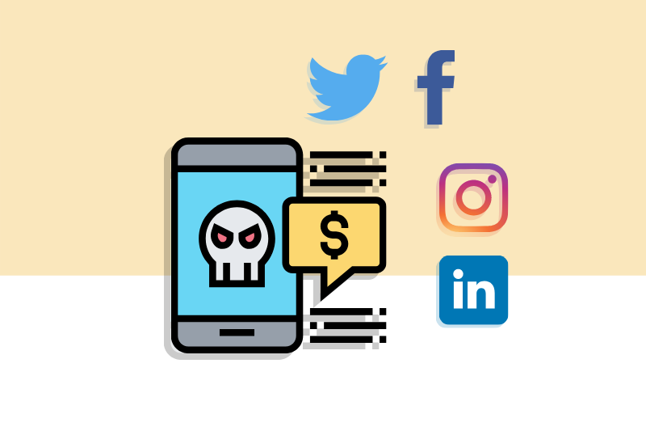
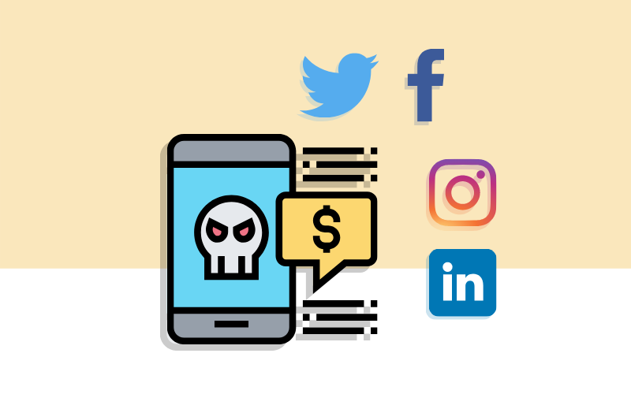

El delito informático implica actividades criminales que los países han tratado de encuadrar en figuras típicas tradicionales tales como robo, hurtos, fraudes, falsificaciones, perjuicios, estafas y sabotajes.
Se trata del acceso con técnicas informáticas a cuentas personales, ya sea de redes sociales, correo electrónico o financieras. El objetivo, robar información o dinero. Se cometen a través de programas maliciosos desarrollados para borrar, dañar, deteriorar, hacer inaccesibles, alterar o suprimir datos informáticos sin tu autorización y con fines económicos y de daño.
 
